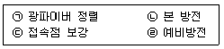
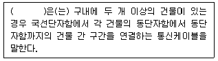

통신설비기능장 (2020-05-24 기출문제)
1과목: 임의 과목 구분(20문항)
1. 다음 중 ATM 교환기 중계선 정합회로 기능인 것은?
- 과전압 보호(Over Voltage Protection)
- 경보처리(Alarm Processing)
- 내외선 시험(Testing)
- 호출신호 송출(Ringing)
(정답률: 81%)

2. 다음 중 전자 교환기의 설명으로 틀린 것은?
- 축적 프로그램 제어 기술을 사용한다.
- 통화로와 제어계로 명확히 구별되어 있다.
- 신뢰성은 높으나 잔고장이 많고 수명이 짧다.
- 새로운 서비스의 적용 및 유지보수가 용이하다.
(정답률: 88%)
3. 다음 중 시분할 방식을 사용하는 전자교환기는?
- AXE-10 ESS
- M10CN ESS
- No. 1A ESS
- X-bar 교환기
(정답률: 85%)
4. 데이터 신호속도 4,800[bps]인 모뎀에서 4위상 PSK를 사용할 때 변조속도는?
- 1,200 [bps]
- 2,400 [bps]
- 1,200 [baud]
- 2,400 [baud]
(정답률: 67%)
5. 가정의 수상기로 인입하는 드롭선(Drop wire)이 분기되기 직전 지점에 부착되어 있으며 대부분 전주에 금속(Aluminum) 케이스로 설치되어 가정의 유선방송으로 분기시작이 되는 것은?
- Tap off
- DLNA
- LMDS
- Head-end
(정답률: 73%)
6. 데이터 전송 제어를 위해 패리티 검사(Parity-Check)를 사용하는 이유는?
- 데이터 링크를 확립
- 전송 용량을 확대
- 전송된 부호의 오류를 검출
- 통신 속도를 향상
(정답률: 92%)
7. 시분할 다중화 방식에서 신호파의 최고 주파수를 6[kHz]라고 하면, 최소의 표본화 주파수는?
- 6[kHz]
- 12[kHz]
- 18[kHz]
- 24[kHz]
(정답률: 75%)
8. 다음 중 데이터 전송시 발생되는 에러를 수신측에서 검출 및 정정이 가능한 방식은 무엇인가?
- FEC 방식
- ARQ 방식
- CRC 방식
- 블록합검사 방식
(정답률: 74%)
9. 메시지 교환방식의 설명으로 옳지 않은 것은?
- 속도와 코드가 상이한 다른 단말기의 통신은 불가능하다.
- 축적 및 처리기능을 이용하여 메시지의 방송 및 동시 전송이 가능하다.
- 실시간 또는 상호 대화형식의 메시지를 전송하는 경우에는 부적합하다.
- 통신회선상에서 메시지 단위의 빈 시간이 있어야 전송 가능하므로 전송지연이 매우 크다.
(정답률: 68%)
10. 데이터 단말장치(DTE)의 입력 장치부에 해당하지 않는 것은?
- 키보드
- 프린터
- OCR(Optical Character Reader)
- OMR(Optical Mark Reader)
(정답률: 89%)
11. 다음 중 이동통신시스템에서 이동통신교환국(MSC:Mobile Switching Center)의 주요 기능이 아닌 것은?
- 착·발신 신호 송출 기능
- 타 사업자망과의 망연동 기능
- 위치 등록 기능
- 과금 및 통계 데이터의 저장 기능
(정답률: 67%)
12. 주파수 공용 통신 시스템(TRS)의 특징이 아닌 것은?
- 통화 범위가 넓다.
- 통화 요금이 비싸다.
- 혼신이 적다.
- 즉시 음성 통화가 가능하다.
(정답률: 88%)
13. 루프(Loop) 안테나는 어떤 지향성을 갖는가?
- 단방향 지향성
- 전방향 지향성
- 8자 지향성
- 무지향성
(정답률: 87%)
14. 다음 중 CDMA 시스템에서 기지국으로부터의 수신전력 세기에 따라 이동국 출력을 조정하여 근사적으로 기지국에 도달하는 이동국 출력을 최소화하는 전력제어 방식은?
- 개방루프 전력제어(Open Loop Power Control)
- 페루프 전력제어(Closed Loop Power Control)
- 내부루프 전력제어(Inner Loop Power Control)
- 외부루프 전력제어(Outer Loop Power Control)
(정답률: 84%)
15. 다음 중 4세대 이동통신을 위한 주요 기술 부류에 속하지 않는 것은?
- MIMO 기술
- SDR 기술
- QAM 기술
- 스마트 안테나 기술
(정답률: 76%)
16. AM 변조에서 반송파 신호가 20[W]이고 변조도가 50[%]일 때 변조신호는 얼마인가?
- 20.5[W]
- 22.5[W]
- 24.5[W]
- 26.5[W]
(정답률: 79%)
17. 다음 중 페이딩을 방지하기 위한 다이버시티가 아닌 것은?
- 공간 다이버시티
- 산란 다이버시티
- 주파수 다이버시티
- 편파 다이버시티
(정답률: 78%)
18. 다음 중 위성의 상태, 거리, 위치 등의 데이터를 위성제어센터에 전달하고, 위성제어센터의 명령신호를 받아 위성에 보내주는 역할을 수행하는 것은?
- 원격상태 추적명령(TT&C) 시스템
- 통신망 제어센터(NCC)
- 궤도내 시험(IOT) 시스템
- 위성 버스(BUS)
(정답률: 83%)
19. AM 송신기의 기본이 되는 반송파를 발생하는 기능을 수행하는 부분은 무엇인가?
- 증폭부
- 변조부
- 발진부
- 안테나
(정답률: 70%)
20. 다음 중 위성통신에 대한 설명으로 바르지 않은 것은?
- 주로 SHF주파수를 이용하여 위성의 중계를 거쳐 먼 거리까지 통신하는 방식이다.
- 정지궤도위성은 지구의 공전주기와 같아서 지표면에서 보면 위성이 상공의 한 지점에 정지해 있는 것처럼 보이는 위성이다.
- 지구의 정지 궤도에 떠 있는 위성이 중계소 역할을 한다.
- 다중접속 기술을 이용해 여러 지상국이 위성을 공유한다.
(정답률: 76%)
2과목: 임의 과목 구분(20문항)
21. 다음 중 UADSL에 대한 설명으로 가장 적합한 것은?
- 가입자 양단에 설치하는 스플리터를 사용하지 않고 전송 속도를 줄여 장비 가격을 낮출 DSL 기술이다.
- 광케이블의 종단점에서 가입자 댁내까지만의 가입자 선로를 고속화한 DSL 기술이다.
- 2쌍의 동선 케이블을 이용하여 양 방향 대칭으로 TI/EI속도를 제공하는 DSL 기술이다.
- 날씨 영향 등 회선 상태에 영향을 줄 때도 최대한의 전송 속도를 제공할 수 있게 조정하는 DSL 기술이다.
(정답률: 65%)
22. 서브넷마스크에 대한 설명으로 맞지 않는 것은?
- IP 주소에서 네트워크 주소와 호스트 주소를 구별하는 구별자 역할을 한다.
- 32비트로 이루어져 있다.
- 서브넷 비트열이 ‘0’이면 네트워크 부분으로 인식된다.
- 서브넷 비트열이 ‘0’이면 호스트 주소로 인식된다.
(정답률: 79%)
23. 다음 중 MAC주소에 대한 설명으로 맞지 않는 것은?
- 데이터 링크계층에 속한다.
- 32비트의 길이를 사용한다.
- 물리적 구조를 나타낸다.
- 다른 네트워크로 패킷 발송 시 MAC 주소로 변경된다.
(정답률: 61%)
24. IPTV에서 1[GB] 용량의 영화를 1[Gbps] 전송속도로 다운로드하면 소요시간은?
- 1초
- 2초
- 4초
- 8초
(정답률: 83%)
25. 다음 중 애드혹(ad-hoc) 및 센서 네트워크에 대한 설명으로 옳지 않은 것은?
- MANET은 이동 노드만으로 구성된 자율적이로 수평적인 네트워크 형태의 구성을 제공한다.
- MANET은 네트워크의 토폴로지가 빈번하게 변화하지 않으므로 안정한 데이터 전송이 가능하다.
- USN 구현 기술은 센서 및 노드 기술, USN 센서 네트워크 기술, BcN 연동 기술, USN 미들웨어 기술 등으로 구성된다.
- USN 미들웨어 기술은 응용 서비스 시스템과 센서도느 중간에 위치하여 이들의 원활한 상호 동작을 지원한다.
(정답률: 71%)
26. 사람을 비방할 목적으로 정보통신망을 통하여 공공연하게 거짓의 사실을 드러내어 다른 사람의 명예를 훼손한 자의 벌칙은?
- 1년 이하의 징역, 5년 이하의 자격정지 또는 3천만원 이하의 벌금
- 3년 이하의 징역, 7년 이하의 자격정지 또는 3천만원 이하의 벌금
- 5년 이하의 징역, 7년 이하의 자격정지 또는 5천만원 이하의 벌금
- 7년 이하의 징역, 10년 이하의 자격정지 또는 5천만원 이하의 벌금
(정답률: 70%)
27. 프로토콜 인터페이스를 설명한 것이다. 다음 중 신뢰성 서비스를 이용하지 않는 프로토콜(TCP)은?
- HTTP(HyperText Transfer Protocol)
- SNMP(Simple Network Management Protocol)
- FTP(File Transfer Protocol)
- SMTP(Simple Mail Trasfer Protocol)
(정답률: 69%)
28. 다음 중 암호화 방식인 비밀키 알고리즘에 대한 설명으로 옳은 것은?
- 암호키는 공개하고 해독키는 비밀로 한다.
- 동일한 키로 데이터를 암호화하고 복호화한다.
- 암호화, 복호화 속도가 느리며 알고리즘이 복잡하다.
- 키의 분배가 용이하고 관리해야 할 키의 개수가 적다.
(정답률: 71%)
29. 전자서명 사용시 이용자의 프라이버시 노출에 대한 보호와 전자화폐 이용시 사용자의 신원노출 문제점을 해결하기 위해 사용하는 방식은?
- 은닉서명
- 암호서명
- 비밀서명
- 이중서명
(정답률: 74%)
30. 인터넷 웹사이트를 통해 개인의 컴퓨터나 휴대폰, 사내 컴퓨터에 저장된 파일이나 문서, 이미지, 영상 파일 등을 암호화하여 열지 못하도록 만든 후 온라인 전자화폐 지불시 해독용 암호 키를 주겠다며 금품을 요구하는 행위를 무엇이라 하는가?
- Ransomware
- Spyware
- DDoS
- Dropper
(정답률: 89%)
31. 광파이버에서 광의 입사각 조건을 표시하기 위하여 사용되는 것은?
- 코어
- 클래드
- 편심률
- 개구수(Numerical Aperture)
(정답률: 79%)
32. 통신선로 공사 시 루트 선정 조건을 알맞지 않은 것은?
- 선로의 거리가 최단거리인 도로
- 유도방행, 전식 또는 화학 부식이 적은 도로
- 지질이 양호하여 함몰, 붕괴, 유출될 염려가 없는 도로
- 지하매설물이 많고 또한 지하관로 공사가 쉬운 도로
(정답률: 86%)
33. 다음 중 괌섬유 접속 방법에서 접속손실이 가장 적은 것은?
- 기계식 접속
- 융착 접속
- 슬리브 접속
- 커넥터 접속
(정답률: 84%)
34. 광케이블을 포설 후 융찹접속을 하고자 한다. 작업순서가 알맞은 것은?

- ㉠→㉡→㉢→㉣
- ㉠→㉣→㉢→㉡
- ㉠→㉣→㉡→㉢
- ㉢→㉣→㉡→㉠
(정답률: 88%)
35. 다음 중 UTP 케이블 종류에 따른 카테로기별 쓰임이 틀린 것은
- CAT2 : 인터넷 백본망
- CAT3 : 10BaseT Ethernet 데이터 및 음성 전송
- CAT5 : 100[Mbps] Fast Ethernet Network
- CAT6 : 1[Gbps] 네트워크 구성
(정답률: 77%)
36. 굴절률이 1.5 인 유리로 빛이 공기중에서 수직으로 입사할 때 공기와 유리의 경계에서 반사되는 전력은 몇 [%]인가? (단, 공기의 굴절율은 1이다.)
- 1[%]
- 2[%]
- 4[%]
- 10[%]
(정답률: 71%)
37. 전송선로의 종단이 단락 되었을 경우 전압 반사계수(m)는 얼마인가?
- -2
- -1
- 0
- 무한대
(정답률: 82%)
38. 수신기의 감도 측정은 다음 중 어느 상태에서 하는가?
- 무의 최대 출력시
- 신호대 잡음비를 규정한 상태에서
- 이득 조정기를 최대로 한 상태에서
- 최대 출력시
(정답률: 82%)
39. 전화 중계기의 입력측 전류가 100[mA]이고, 출력측 전류가 10[mA]이면 통화 감쇄량은 얼마가 되는가?
- 1[dB]
- 10[dB]
- 20[dB]
- 50[dB]
(정답률: 62%)
40. 수신기의 성능 중 얼마나 미약한 전파까지를 수신할 수 있는가의 극한을 표시하는 양으로 종합 이득과 내부의 잡음에 결정되는 것은?
- 감도
- 선택도
- 충실도
- 안정도
(정답률: 86%)
3과목: 임의 과목 구분(20문항)
41. 다음 중 VoLTE(Voice over LTE)에 대한 설명으로 가장 옳지 않은 것은?
- 음성을 데이터 패킷으로 바꿔서 전달하는 방식이기 때문에 데이터 사용량 단위로 요금을 부과한다
- 넓은 주파수 대역폭과 고음질 음성코덱을 사용해 통화품질이 우수하다.
- 통화연결 시간은 3G 비해 최대 20배 정도 빠르다.
- 음성통화를 하면서 영상통화로 전환하거나 사진, 영상, 위치정보 등을 공유할 수 없다.
(정답률: 84%)
42. 다음 중 첨단교통 관리 시스템(ATMS)에 대한 설명으로 틀린 것은?
- 도로정보를 감지하여 신호주기 조절
- 버스도착 예정시간 안내
- 고속도로 유입 교통량 자동 조절
- 무인 자동 단속, 통행료 자동 징수
(정답률: 75%)
43. 송신단의 저항 ZS=300이고, 수신단의 저항 ZR=600인 선로를 접속할 경우 부정합 감쇠량은?
- 3.21 [dB]
- 5.46 [dB]
- 7.47 [dB]
- 9.54 [dB]
(정답률: 47%)
44. 다음 중 광섬유 케이블의 손실을 측정하는 방법은?
- 컷백(Cut Back) 방법
- RNF(Refracted Near field) 방법
- 펄스 지연 방법
- 파필드(Far-Field) 방법
(정답률: 83%)
45. 75[Ω]계에서 0[dBm]이 되려면 P=1[mW]이다. 전류(I)가 3.65[mA]일 때 부하 양단전압은?
- 0.274[V]
- 1.274[V]
- 0.775[V]
- 1.775[V]
(정답률: 57%)
46. 과학기술정보통신부장관이 방송통신설비가 기술기준에 적합하게 설치·운영되는지를 확인하기 위하여 소속 공무원으로 하여금 방송통신설비를 설치·운영하는 자의 설비를 조사하거나 시험하게 할 수 있는 경우가 아닌 것은?
- 방송통신설비 관련 시책을 수립하기 위한 경우
- 국가비상사태가 발생한 경우
- 재해·재난 예방을 위한 경우 및 재해·재난이 발생한 경우
- 방송통신설비의 이상으로 광범위한 방송통신 장애가 발생할 우려가 있는 경우
(정답률: 65%)
47. 다음 중 홈네크워크 설비 중 월패드의 설치에 대한 설명이 틀린 것은?
- 월패드에는 조작을 위한 전원이 공급되어야 한다.
- 월패드는 사용자의 조작을 고려한 위치 및 높이에 설치하여야 한다.
- 월패드에서 원격제어 되는 조명제어기, 난방제어기 등 모든 원격 제어기기에는 수동으로 조작하는 스위치를 설치할 필요가 없다.
- 월패드에는 이상전원 발생시 제품을 보호할 수 있는 기능을 내장하여야 한다.
(정답률: 89%)
48. 다음 중 과학기술정보통신부장관이 방송통신기술의 진흥을 통한 방송통신서비스 발전을 위하여 시책을 수립·시행하여야 하는 사항이 아닌 것은?
- 방송통신기술의 수출입에 관한 사항
- 방송통신 기술협력, 기술지도 및 기술이전에 관한 사항
- 방송통신기술의 표준화에 관한 사항
- 방송통신기술의 국제협력에 관한 사항
(정답률: 79%)
49. 다음 문장의 괄호 안에 들어갈 내용으로 가장 적합한 것은?

- 구내간선 케이블
- 건물간선 케이블
- 수평배선 케이블
- 성형배선
(정답률: 79%)
50. 다음 중 과학기술정보통신장관이 방송통신설비의 운용자의 이용자의 안전 및 방송통신서비스의 품질향상을 위하여 단말장치의 기술기준을 정할 수 있는 사항이 아닌 것은?
- 방송통신망 및 방송통신망 운용장에 대한 위해방지에 관한 사항
- 방송통신망에 대한 일반인의 용이한 접근에 관한 사항
- 단말장치와 단말장치 간의 상호작용에 관한 사항
- 전화역무 간의 상호운용에 관한 사항
(정답률: 73%)
51. 공사의 목적물 소유자는 공사에 대한 실시·준공설계도서를 언제까지 보관하여야 하는가?
- 공사의 목적물이 착공될 때까지
- 공사의 목적물이 사용전검사를 받을 때까지
- 공사의 목적물이 준공될 때까지
- 공사의 목적물이 폐지될 때까지
(정답률: 77%)
52. 정보통신공사업법에서 설계도서의 보관의무에 대한 설명으로 틀린 것은?
- 공사를 설계한 용역업자는 그가 작성 또는 제공한 실시설계도서를 해당 공사가 준공될 때까지 보관
- 공사의 목적물의 소유자는 공사에 대한 실시·준공설계도서를 공사의 목적물이 폐지될 때까지 보관
- 소유자가 보관하기 어려운 사유가 있을 떄는 관리주체가 보관
- 공사를 감리한 영역업자는 그가 감리한 공사의 준공설계도서를 하자담보책임기간이 종료될 때까지 보관
(정답률: 74%)
53. 다음 중 「방송통신설비의 안전성 및 신뢰성에 대한 기술기준」에서 정하는 옥외설비 설치 시 마련하야야 할 대책이 아닌 것은?
- 풍해 대책
- 낙뢰 대책
- 화재 대책
- 저습도 대책
(정답률: 86%)
54. 방송통신설비의 지진대책의 적용을 위한 시험 및 확인방법 등에 대한 세부사항은 누가 정하여 공고하는가?
- 한국방송통신전파진흥원장
- 방송통신위원장
- 국가재난대책본부장
- 국립전파연구원장
(정답률: 68%)
55. 다음 홈네트워크 설비(기기)중 세대내의 홈네트워크 기기들 및 단지 서버간의 상호 연동 기능이 요구되는 것은?
- 원격검침시스템
- 주동출입시스템
- 홈게이트웨이
- 가스 및 개폐감지기
(정답률: 79%)
56. 다음 중 공정분석의 목적이 아닌 것은?
- 레이아웃의 개선
- 개인별 작업 능력 평가
- 공정의 개선
- 공정관리 시스템의 개선
(정답률: 79%)
57. 작업계획은 생산계획의 단계 중 어디에 해당하는가?
- 실시계획
- 실행계획
- 준비계획
- 절차계획
(정답률: 76%)
58. 경영효율을 향상시키기 위한 중점관리방법으로 1951년 GE사의 M.F.Deckie에 의해 제창된 것으로 Pareto 분석기법 또는 통계적 선택법이라고도 불리는 것은?
- ABC 분석기법
- 경영 분석기법
- RCA 분석기법
- 품목별 분석기법
(정답률: 79%)
59. 다음 중 워크팩터(Work Factor)법에서 작업동작을 행하는 신체사용 부분이 아닌 것은?
- 몸통
- 허리
- 손이나 손가락
- 앞팔 선회
(정답률: 73%)
60. 공급사슬 관리에서 반복적으로 발생하는 문제점 중 하나로 이것은 제품에 대한 수요정보가 공급사슬 상의 참여 주체를 하나씩 거쳐서 전달 될 때마다 계속 왜곡됨을 의미한다. 이런 현상을 무엇이라 하는가?
- 도플러 효과
- 플라시보 효과
- 채찍 효과
- 온실 효과
(정답률: 67%)